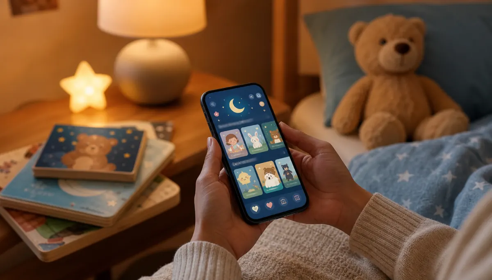

If you have ever searched for the best bedtime stories for toddlers, you probably want more than a book list. You want to know what actually helps a busy little mind slow down at night. Toddlers need stories that are simple enough to follow, warm enough to feel safe, and flexible enough for a parent to read with personality.
A good toddler bedtime story does three jobs at once: it gives your child language, it creates connection, and it gently moves the whole room toward sleep. Here is what to read, what to avoid, and how to make each story feel like a calm ritual instead of another bedtime battle.
Use this page for general toddler bedtime story principles. For age-specific choices, the main hub is bedtime stories by age, including stories for 2-year-olds and 3-year-olds.
What makes a bedtime story good for toddlers?
Toddlers are still learning how stories work. They enjoy repetition, clear emotions, familiar routines, and simple cause-and-effect moments. The best bedtime stories for toddlers usually have a soft rhythm, a small problem, and a reassuring ending.
Look for stories with:
- short sentences and clear language,
- gentle repetition your child can predict,
- animals, family moments, bedtime routines, or everyday adventures,
- pictures that are expressive but not too visually busy, and
- an ending that feels safe, cozy, and complete.
1. Choose calm stories before sleep
Big action stories can be fun earlier in the day, but bedtime usually needs a softer pace. Choose stories about getting ready for bed, looking for a favorite toy, saying goodnight, helping a friend, or going on a gentle imaginary journey.
A little adventure is fine. The key is that the story should land somewhere peaceful. If the ending leaves your toddler excited, worried, or full of questions, it may be better as an afternoon story.
2. Pick stories close to your toddler's world
Toddlers connect quickly with stories that feel familiar. A character brushing teeth, missing a parent, sharing a toy, hearing thunder, or going to daycare can help your child process real feelings in a safe way.
These stories also give you natural openings for conversation. You can ask, "Have you ever felt like that?" or "What would you do if your teddy went missing?" This turns reading into connection instead of performance.
3. Use repetition as a strength
If your toddler asks for the same story every night, that is not a problem. Repetition helps young children predict what comes next, remember new words, and feel in control. Familiar stories can also reduce bedtime resistance because your child already knows the emotional path.
To keep the same book fresh, try changing one small thing each time. Whisper one page, let your child finish a repeated line, or ask them to point to a favorite character.
4. Read slowly and warmly
How you read matters as much as what you read. Use a slower voice than you would during daytime play. Pause at pictures. Let your child notice small details. Keep your tone warm and steady, even if the story has a funny or surprising moment.
Your calm pace tells your toddler that the day is ending. This is one reason parent-led reading is so powerful: your voice becomes part of the bedtime cue.
5. Ask small questions, not too many
Questions help toddlers engage with stories, but too many questions can make bedtime feel like a quiz. Use one simple prompt every few pages.
Try:
- "What do you see on this page?"
- "How do you think the little bear feels?"
- "What might happen next?"
- "Can you show me the sleepy face?"
If your child does not answer, that is fine. You can answer softly yourself and keep reading.
6. Keep bedtime storytime short enough to succeed
For many toddlers, 5 to 15 minutes is enough. One short story read with attention is better than three stories rushed through while everyone gets tired. If your child always asks for "one more," set the limit before you begin.
You might say, "Tonight we will read two stories, then lights out." Predictability makes the boundary easier to accept.
7. End with the same closing ritual
After the last page, use a repeated closing line. It could be "The story is done, and now we rest," or "Goodnight book, goodnight room, goodnight you." The exact words matter less than the consistency.
This small ritual helps your toddler move from story attention to sleep readiness. It also prevents storytime from turning into an open-ended negotiation every night.
Best types of bedtime stories for toddlers

Instead of looking for one perfect book, build a small rotation of story types. This gives your toddler choice while keeping the mood calm.
- Goodnight stories: simple books where characters say goodnight to people, places, or objects.
- Animal stories: gentle tales about small animals finding home, comfort, or friendship.
- Routine stories: stories about bath time, pajamas, brushing teeth, reading, and sleep.
- Feelings stories: simple stories about worry, sharing, missing someone, or feeling brave.
- Imagination stories: soft adventures that end in safety, rest, or togetherness.
What to avoid right before bed
Some stories are wonderful but not ideal at bedtime. Save very loud, scary, fast-moving, or highly silly stories for earlier in the day. If a story leads to running, shouting, or lots of "why" questions, it may be doing its job beautifully, just not at bedtime.
A simple toddler bedtime story routine
Here is a simple routine many families can adapt:
- Let your toddler choose from two calm stories.
- Read in the same cozy spot each night.
- Use a slow voice and pause for pictures.
- Ask one or two gentle questions.
- End with the same goodnight phrase.
If you want a fuller wind-down plan, read our guide to calming bedtime rituals parents can try tonight.
FAQ: Best bedtime stories for toddlers
What are the best bedtime stories for toddlers?
The best bedtime stories for toddlers are short, calm, repetitive, emotionally simple, and easy for a parent to read aloud with warmth and rhythm.
How long should a bedtime story be for a toddler?
Most toddlers do well with one or two short stories, usually around 5 to 15 minutes total. Watch your child's cues. If they are rubbing eyes, turning away, or getting restless, it is time to close.
Should toddler bedtime stories be exciting or calm?
Calm stories usually work best before sleep. Gentle adventure is fine, but the ending should feel safe, warm, and settled.
What if my toddler wants the same bedtime story every night?
That is normal. Repeating a favorite story builds confidence, memory, vocabulary, and comfort. You can keep the favorite and slowly introduce one new story beside it.

Need fresh bedtime stories for your toddler?
Baboo Stories gives parents gentle story ideas, read-aloud prompts, and calming routines for toddlers and young children. Use it when you want storytime to feel easier, warmer, and more connected.
Baboo Stories is a calmer bedtime story app for parents who want to read, bond, and help toddlers wind down with gentle read-aloud stories.
For stories you can read in your own voice, explore Baboo Stories. The app is free to download; an optional monthly subscription unlocks all stories.